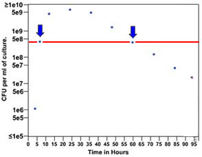

A first approach (under construction) |
We will begin to build a mathematical model of bacterial growth by considering what we know about the system of growing E. coli. First, it is clear that whether the population is growing or decline is not a simple function of population size -- why? Because the same population size can either be growing or shrinking. Clearly, whether the population is increasing or decrease depends upon the history of the culture – it is a function of time. |
 |
What range of values of Δt will lead to an increase in the population? What range of values of Δt will lead to decline in population size? |
The change in population size over short time periods. Let us begin by attempting to model the change in population size over a relatively short time period, hours rather than days. At time to the population size is denoted by Po. At some later time to + Δt the population size will be Po + ΔP. Depending upon the choice of to, ΔP may be a positive or a negative number. ΔP is a function of two factors; how many new organisms have appeared and how many existing organisms died over the course of Δt. It seems a reasonable assumption that number of "births" and the number of deaths will be a function of the total number of organisms present. We can therefore write an equation for ΔP as a function of a time interval Δt ΔP/Δt = (fPo - dPo)Δt (equation 1) Where f (for fecundity) is the rate at which new organisms appear, while d (for death) is the rate at which existing organisms disappear. By simple math we can rewrite equation 1 as ΔP = (f - d)Po (equation 2) We will assume that over the course of the relatively
short values of Δt we are considering, both f and
d are constant. |
The assumption that f and are constant is clearly an approximation. Why is it unlikely that f and d are ever constant? What are f and d functions of? |
Pt = Po + ΔP We can substitute for ΔP to obtain Pt = Po +(f - d) Po Which can be rearranged to form Pt = (1+ f - d) Po If we let (1 + f - d) = λ, then Pt = λPo, where λ is
known as the finite growth rate. |
At time to, f = 2, d = 0.3 and Po = 1000. How many time intervals will it take before the population to reach 2000? 1,000,000? Plot out your analysis with population along the Y axis and time along the X axis in units of Δt. |
Use Wikipedia |
revised 19 March 2005 |